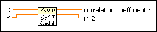

Correlation Coefficient (Kendall's Tau) VI
Owning Palette: Probability & Statistics VIs
Requires: Full Development System
Computes the Kendall's Tau correlation coefficient between input sequences X and Y.

 Add to the block diagram Add to the block diagram |
 Find on the palette Find on the palette |